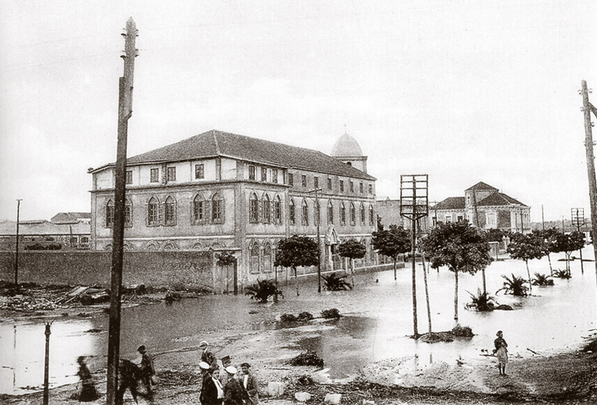
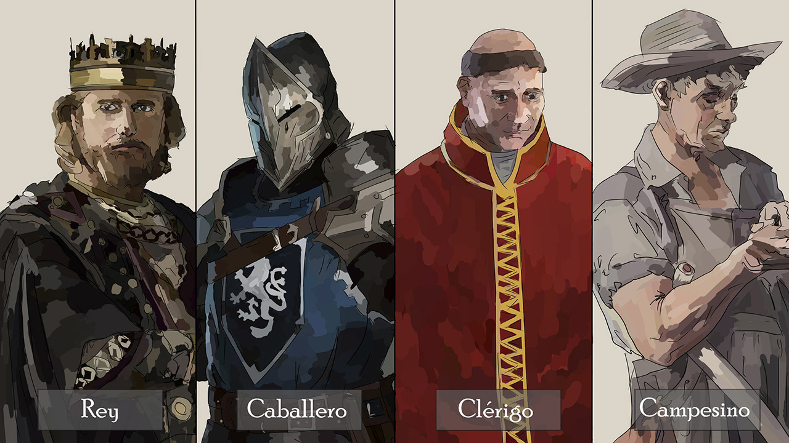
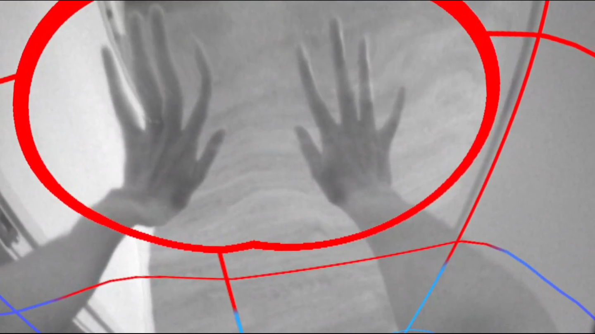

Título
Construye tu propio discurso
Build Your Own Speech
Año
2021
Técnica
TouchDesigner
Descripción
Se ha desarrollado un programa que interactúa con el usuario a través de un mando Xbox One, y cuya respuesta del sistema es la variación en distintos apartados de una composición.
This software interacts with the user through Xbox One controller, and the response of the system is the variation in different sections of a composition.
Más información y recursos

Título
La Gran Riada de San Miguel
The great flood of San Miguel
Año
2020
Técnica
HTML, CSS y Java
Descripción
Esta pequeña web pretende recoger unas imágenes de lo que fue una de las mayores inundaciones documentadas de la ciudad de Cartagena.
This small website aims to collect some images of what was one of the largest documented floods in the city of Cartagena (Spain).
Ver el trabajo

Título
Los Motivos de Héctor
Año
2019
Técnica
Transmedia. Ivoox, blogspot, website y espacio sonoro.
Transmedia. Ivoox, blogspot, website and sound space.
Descripción
Proyecto colectivo de ficción transmedia en dónde la trama expone un tejido en el que confluyenpasiones, frustraciones y traición.
A collective project of transmedia fiction where the plot exposes a web where passions, frustrations and betrayal converge.
Ver el trabajo

Título
Medieval Times
Año
2019
Técnica
Klynt3
Descripción
Entorno web con caracter narrativo no lineal de temática medieval. Se pretende evidenciar de manera entretenida la desigualdad oportunidades entre clases sociales.
Web environment with a non-linear narrative character with a medieval theme. This environment aims to show in an entertaining way the inequality of opportunities between social classes.
Ver el trabajo

Título
Delimitantes
Año
2021
Técnica
Adobe Premiere Pro
Descripción
Videoensayo exerimental que trata de examinar las imagenes resultantes de las cámaras integradas del visor de realidad virtual en las Oculus Quest 2.
Experimental video essay that tries to examine the images resulting from the integrated cameras of the virtual reality viewer in the Oculus Quest 2.
Más información y recursos

Título
La Lista
Año
2020
Técnica
Klynt3
Descripción
Proyecto artístico web basado en el documento "List of 36 570 documented deaths of refugees and migrants due to the restrictive policies of "Fortress Europe""
Artistic web proyect based on the document "List of 36 570 documented deaths of refugees and migrants due to the restrictive policies of "Fortress Europe""
Documento
Ver obra(no disponible online)